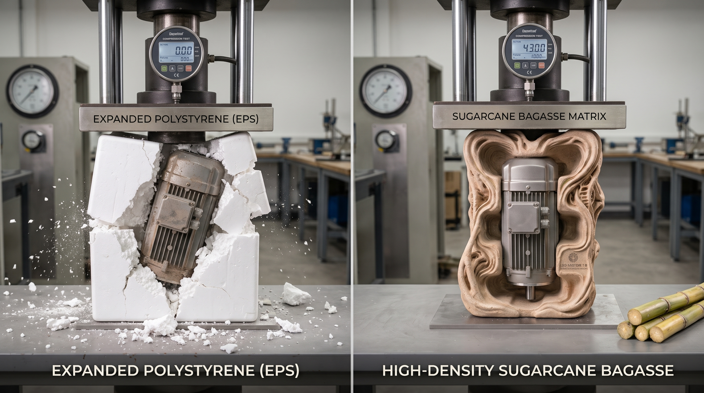
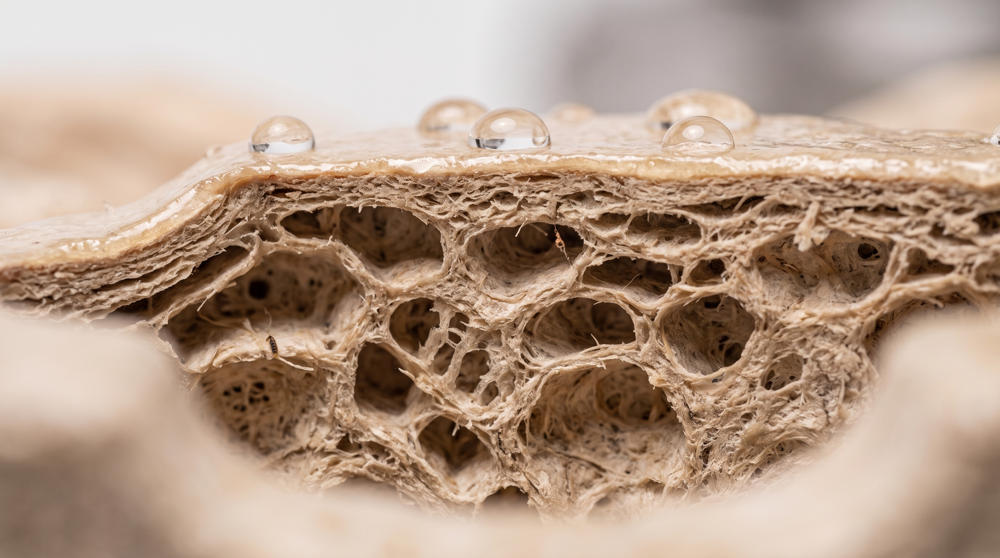
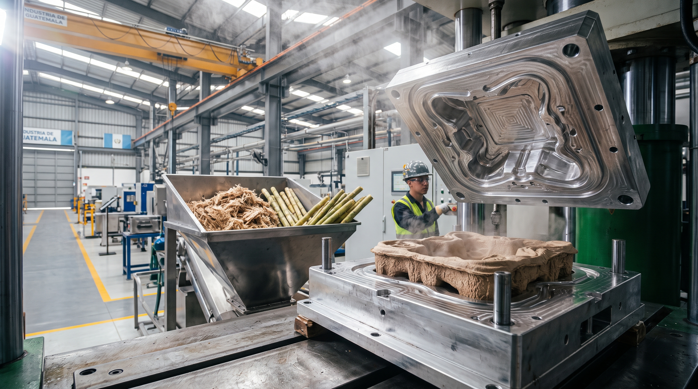
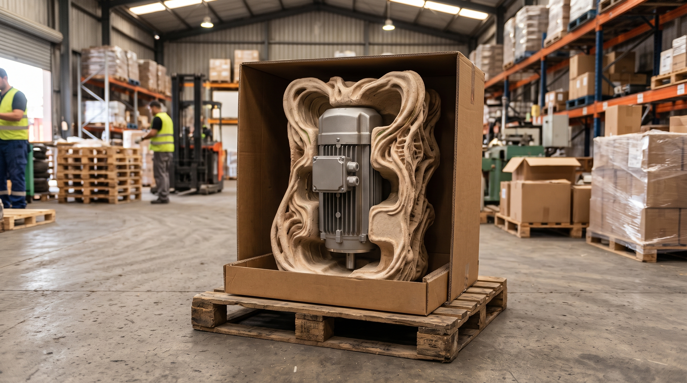

Sustituimos en proporción 1-a-1 al poliestireno expandido (EPS / duroport) en la industria electrónica y de motores pesados mediante matrices bio-integradas de caña de azúcar con barrera hidrofóbica natural. Cero riesgo de mermas en bodega, 100% cumplimiento ESG.
10.6 MPa
Resistencia máxima a tensión (+25%)
8.52%
Absorción hídrica reducida (vs 22.3%)
1 a 1
Sustitución estructural frente al EPS
100%
Biodegradable y Compostable
Ingeniería Industrial
Universidad Da Vinci de Guatemala
Biografía, Formación e Intereses:
Estudiante de Ingeniería Industrial con enfoque en diseño de procesos de manufactura, optimización de cadenas de suministro B2B, control de calidad (Takt time, análisis CAPEX/OPEX) e innovación en biomateriales de economía circular. Apasionado por transformar pasivos ambientales agroindustriales en soluciones de ingeniería de alto desempeño.Motivación del Proyecto (Problema e Inspiración):
Al observar cómo toneladas de poliestireno expandido (duroport) de electrodomésticos y motores terminan en los vertederos de Guatemala sin posibilidad de reciclaje viable, y contrastarlo con la abundancia de biomasa de caña de azúcar en la Costa Sur, surgió la motivación de crear Eco-Bagazo: aplicar ingeniería de termocompresión para que las empresas logísticas protejan sus equipos pesados sin contaminar ni arriesgar su rentabilidad.Donde la potencia agroindustrial de la caña de azúcar guatemalteca se une con la ingeniería de precisión para redefinir el embalaje B2B.

Simbología de Ingeniería del Logotipo:
Eco-Bagazo nació en 2026 en las aulas y laboratorios de la Facultad de Ingeniería, Industria y Tecnología de la Universidad Da Vinci de Guatemala. Su fundador, Christian Gonzalez, identificó una paradoja crítica en la industria nacional: mientras los centros logísticos importaban y desechaban toneladas de duroport (EPS) que contaminan por más de 500 años, en la Costa Sur de Guatemala los ingenios azucareros generaban millones de toneladas de bagazo de caña.
Tras salir al campo y descubrir que el 91% del bagazo ya se empleaba en cogeneración eléctrica y que el mayor freno de los directores logísticos era el miedo a la humedad tropical, el proyecto evolucionó: dejamos atrás la idea de un "empaque artesanal" y diseñamos el prototipo BIO-MOTOR 1.0, combinando el 9% de biomasa excedentaria con termocompresión CNC y una barrera hidrofóbica de almidón de yuca.
Diseñar, manufacturar y proveer al sector industrial B2B soluciones de empaque termo-estructuradas a partir de biomasa excedentaria de bagazo de caña y biopolímeros locales, sustituyendo 1-a-1 al poliestireno expandido (EPS) con idéntica resistencia mecánica (10.6 MPa) y protección anti-humedad, eliminando el riesgo de mermas y acelerando sus metas ESG.
Consolidarnos para el año 2030 como la empresa referente en Centroamérica en ingeniería de bio-embalaje industrial de alto desempeño, operando plantas modulares de termocompresión certificadas bajo la norma ASTM D6400 que descarbonicen las cadenas de suministro de la industria electrónica, metalmecánica y agroexportadora.
Rigor Técnico
Validación en MPa y Cobb
Circularidad Real
Biomasa 100% compostable
Confiabilidad B2B
Seguridad en bodega
Química Limpia
Sin blanqueo clorado
Demostración técnica y de mercado sobre por qué la sustitución del poliestireno expandido (EPS) en la logística B2B es una urgencia respaldada por datos científicos.
El sector industrial y de retail electrónico depende masivamente del poliestireno expandido (EPS / duroport) para amortiguar equipos pesados. Este derivado del petróleo se fractura ante cargas concentradas, ocupa gran volumen en bodegas y no es biodegradable.
Los Directores de Logística y Sostenibilidad (B2B) están presionados por sus juntas directivas para cumplir metas ESG (cero plástico), pero sufren una fuerte "aversión a la pérdida": temen que un empaque ecológico absorba humedad o colapse bajo compresión.
Guatemala es potencia agroindustrial azucarera. Transformar la fracción excedentaria del bagazo de caña mediante termocompresión de alta densidad y biopolímeros hidrofóbicos permite entregar un inserto protector que supera la tenacidad del EPS y elimina el riesgo por humedad.

Ante impactos dinámicos o sobrecarga en estiba, el poliestireno expandido (izquierda) sufre fractura frágil catastrófica, desmoronándose en microplásticos y dejando desprotegido el motor eléctrico.
En contraste, la matriz de bagazo de alta densidad (derecha) actúa como una red viscoelástica de fibras de celulosa deslignificada que disipa la carga axial (hasta 10.6 MPa) manteniendo el motor intacto y centrado.
Colapso Frágil
+500 años en degradarse10.6 MPa Tenacidad
100% CompostableInvestigación documental y trabajo de campo con fuentes verificadas.
El 40% de los residuos plásticos globales proviene de empaques de un solo uso; el EPS tarda más de 500 años en degradarse y fragmentarse en microplásticos.
El bagazo posee 40-50% de celulosa. El pulpeo con carbonato/bicarbonato y deslignificación con oxígeno (rendimiento 72%) eleva sus propiedades mecánicas un +25%, logrando 10.6 MPa.
La incorporación de aglutinante de almidón de yuca (tapioca) y recubrimiento de goma laca (shellac) reduce la absorción de agua del bagazo moldeado de 22.36% a 8.52%.
En Guatemala el 91% del bagazo se utiliza en cogeneración eléctrica en los ingenios; por ello, nuestro modelo B2B asegura contratos sobre el 9% de biomasa excedentaria.
Empaques industriales e insertos amortiguadores 3D termo-moldeados a base de pulpa de bagazo de caña.
Acelerar la transición hacia la Economía Circular en Guatemala ofreciendo protección técnica de nivel industrial sin plásticos.
Elimina el dilema entre cumplir metas corporativas ecológicas y proteger equipos pesados frente a humedad y caídas.
Nervaduras tipo panal de abejas (10.6 MPa), sellado hidrofóbico con almidón de yuca y proceso sin blanqueamiento químico.
Haz clic en las pestañas para explorar la validación de empatía B2B
Director de Cadena de Suministro y Sostenibilidad (B2B)
Edad: 45 años
Ubicación: Zonas industriales de Ciudad de Guatemala / Villa Nueva
Formación: Ingeniero Industrial con Maestría en Logística
Canales: LinkedIn, Ferias Logísticas y WhatsApp Business
Su junta directiva le exige eliminar el duroport (EPS) para cumplir metas ESG, pero él sufre pánico operativo a que un empaque biodegradable absorba humedad en bodegas tropicales y dañe motores o televisores costosos.
Le provee un inserto termo-moldeado con diseño de panal y barrera de almidón de yuca que bloquea la humedad (8.52%) y soporta impactos severos sin alterar el tiempo de ciclo (Takt time) de sus operarios.
"Roberto necesita garantías técnicas certificadas (anti-humedad y PSI), porque el miedo a perder mercancía en bodega frena su deseo urgente de cumplir las metas ESG corporativas."
Ver pruebas de laboratorio (Drop-test y ensayo Cobb de humedad) directamente en su línea de empaque y comprobar que existe paridad de costo logístico frente al EPS.
"Quiero ser un líder sostenible en mi empresa, pero si un lote de motores o pantallas se daña por culpa de un empaque húmedo, el responsable directo del sobrecosto seré yo."
Ve contenedores llenos de duroport roto en su centro de distribución, clientes exigiendo empaques limpios y competidores regionales publicando reportes anuales ESG.
Oye a la junta directiva pedir reducción de huella de carbono, pero también oye a los jefes de bodega quejarse de que el cartón convencional se debilita en época lluviosa.
Exige fichas técnicas de resistencia (MPa, PSI, absorción Cobb) antes de autorizar cualquier cambio de proveedor y realiza pruebas piloto rigurosas.
Aversión al riesgo operativo, altos costos de cambio (matricería), temor a la humedad tropical y desconfianza hacia productos ecológicos de apariencia "artesanal".
Sustitución 1-a-1 del EPS sin detener la línea de empaque, certificación ASTM D6400 para reportes ESG y cero mermas por vibración o humedad.
Haz clic en los puntos numerados 1 al 7 sobre el prototipo para inspeccionar su ingeniería.


¿Para qué le sirve al usuario B2B?
Elimina el uso de plástico (EPS), evita multas ambientales/EPR y garantiza que el empaque sea 100% compostable tras su ciclo logístico.
¿Cómo funciona o de qué está hecha?
Elaborado con fibra de bagazo de caña (40-50% celulosa) pulpeada con carbonato/bicarbonato de sodio y deslignificada con oxígeno (rendimiento del 72%).
Índice de Componentes del Prototipo:
Incluye matriz CNC, bagazo, yuca, goma laca y ensayos PSI/Cobb.

Proceso de Manufactura · GuatemalaAlimentación directa de biomasa excedentaria de caña de azúcar hacia la prensa térmica hidráulica (160 °C – 180 °C) equipada con el molde bipartito en aluminio mecanizado CNC, logrando geometrías 3D de alta densidad sin blanqueamiento químico.

Validación en Bodega B2B · Sustitución 1-a-1El inserto BIO-MOTOR 1.0 se acopla con precisión milimétrica dentro de cajas estándar de cartón corrugado sobre tarimas industriales, manteniendo el tiempo de ciclo (Takt time) del operario y soportando apilamiento en bodegas húmedas sin deformación.
Los puntos marcados con * (verde) ya fueron validados con usuarios y literatura técnica en campo.
¿Quiénes son nuestros socios y proveedores clave?
¿Qué debemos hacer para entregar valor?
¿Qué activos estratégicos necesitamos?
¿Qué problema resolvemos y qué valor entregamos?
¿Cómo conseguimos y mantenemos clientes?
¿Por dónde llegamos al cliente B2B?
¿Para quién creamos valor? ¿Quién usa y quién paga?
¿Cuáles son los costos fijos y variables más importantes del modelo?
¿Por qué valor pagaría el cliente y cómo?
Diseñada para vencer el escepticismo técnico y captar Leads empresariales de alto volumen.
Segmento estrictamente B2B (Business-to-Business): Directores y Gerentes de Cadena de Suministro, Logística, Compras Industriales y Sostenibilidad (RSE), de 35 a 55 años, ubicados en zonas industriales de Guatemala.
Objetivo principal: Conseguir clientes potenciales (Generación de Leads B2B) mediante Marketing de Contenidos Técnico. En lugar de publicidad masiva, publicamos evidencia científica: videos de pruebas de compresión y ensayos de humedad.

Eslogan: "Protección industrial. Evolución circular."
El isotipo hexagonal integra la celda estructural de panal, la chimenea industrial B2B, la textura de fibra de bagazo y la hoja de caña de azúcar envolvente.
"Infografía: El costo oculto logístico del EPS vs. La Economía Circular del Bagazo de Caña en Guatemala" (Objetivo: Posicionar autoridad técnica).
"Estudio de Caso en Video: Prueba de compresión 10.6 MPa y estrés hídrico de BIO-MOTOR 1.0" (Objetivo: Derribar la aversión a la pérdida del cliente).
"Agenda una demostración técnica gratuita en tu línea de empaque" (Objetivo: Conversión directa de Leads B2B).
Ingeniería de Empaques B2B · Publicación de Lanzamiento
¿Sabías que el 40% de los residuos plásticos mundiales provienen de los empaques de un solo uso? ♻️📦 Es momento de que la industria evolucione.
Hoy nace oficialmente Eco-Bagazo, la solución de ingeniería en materiales desarrollada para el sector B2B en Guatemala. Fabricamos insertos protectores termo-moldeados a partir de biomasa de caña de azúcar que sustituyen al duroport (EPS) en proporción estructural 1 a 1:
👇 Si eres Director de Logística o Sostenibilidad, solicita hoy una prueba piloto gratuita en tu línea de empaque.
#EcoBagazo #SostenibilidadB2B #LogisticaVerde #IngenieriaIndustrial #EconomiaCircular
Reproductor oficial con el archivo Eco-Bagazo_Pitch_Empresarial.mp4 incrustado + Guion Estructurado.
"Cada año, el 40% de los residuos plásticos proviene de empaques. En Guatemala, los gerentes de logística B2B quieren eliminar el duroport (EPS) de sus motores y electrodomésticos para cumplir metas ESG, pero tienen pánico a que un empaque ecológico absorba humedad tropical y destruya mercancía de miles de dólares."
Síntesis narrativa de la presentación oficial en video
"Hola, soy Christian Gonzalez, futuro Ingeniero Industrial de la Universidad Da Vinci. ¿Sabían que el 40% del plástico mundial son empaques de un solo uso? En Guatemala, empresas que transportan motores y electrónica quieren eliminar el duroport (EPS) para cumplir metas ESG, pero nuestro trabajo de campo reveló su mayor dolor: pánico operativo a que un empaque ecológico absorba humedad en bodega y arruine equipos costosos."
"Para resolver esa aversión a la pérdida creamos Eco-Bagazo. Transformamos el bagazo de caña excedentario de la Costa Sur en insertos termo-comprimidos que sustituyen 1-a-1 al duroport. Al deslignificar la fibra con oxígeno logramos 10.6 MPa de resistencia a la tensión, y al sellarla con almidón de yuca y goma laca reducimos la absorción de humedad de 22.36% a solo 8.52%."
"Nuestro prototipo BIO-MOTOR 1.0 incorpora una Matriz Protectora Bio-Integrada con nervaduras tipo panal de abejas que disipan impactos y ofrecen un ajuste de contorno de precisión (±0.5 mm) sin alterar el Takt time en la línea de empaque. Además, eliminamos el blanqueamiento químico para reducir costos y comunicar autenticidad ecológica."
"Descubrimos en campo que el 91% del bagazo en Guatemala se usa para cogeneración eléctrica; por eso nuestro modelo B2B asegura alianzas sobre el 9% excedentario. Vendemos por contratos de volumen más un Setup Fee por molde exclusivo, captando clientes mediante LinkedIn B2B y pruebas de caída (Drop-test) en sus propias bodegas."
"Con un presupuesto MVP validado de Q 4,935.00 para matricería CNC y pruebas de laboratorio, Eco-Bagazo demuestra que la ingeniería industrial guatemalteca puede unir rentabilidad y economía circular. Los invito a agendar una prueba piloto: Eco-Bagazo, protección industrial, evolución circular."
Síntesis de hallazgos empíricos, triple viabilidad, aprendizajes metodológicos y hoja de ruta.
Nuestra suposición inicial era que el bagazo de caña era un residuo sin costo. La investigación demostró que en Guatemala cerca del 91% del bagazo se destina a cogeneración eléctrica en los ingenios. Esto nos obligó a pivotar la estructura de costos para negociar exclusivamente sobre la fracción excedentaria (9%), reconociendo su costo de oportunidad energético.
Confirmamos que ningún gerente de logística cambiará el poliestireno (EPS) únicamente por altruismo ecológico. La decisión de compra B2B solo se desbloquea cuando se demuestra científicamente que la barrera hidrofóbica (almidón de yuca al 8.52%) y la estructura en panal (10.6 MPa) garantizan cero mermas en bodegas húmedas.
Existe una presión real y creciente sobre las empresas de retail electrónico y manufactura para eliminar plásticos de un solo uso (metas ESG y regulaciones EPR). Al ofrecer paridad de costo logístico y venta consultiva por lotes B2B, el mercado objetivo tiene presupuesto y urgencia para adoptar Eco-Bagazo.
Respaldada por literatura arbitrada (BioResources, 2025): el pulpeo alcalino y deslignificación con oxígeno logra un rendimiento del 72% y una resistencia a la tensión de 10.6 MPa (+25%), mientras que el aglutinante de almidón de yuca y goma laca reduce la absorción hídrica al 8.52%.
Al eliminar el proceso de blanqueamiento químico mediante metodología SCAMPER, simplificamos la línea de producción y reducimos el OPEX. Para el cliente, el inserto BIO-MOTOR 1.0 encaja con tolerancia milimétrica sin alterar el tiempo de ciclo (Takt time) de sus operarios de bodega.
Herramienta integrada para facilitar la calificación del sitio web según los 5 criterios oficiales de la guía académica (2 puntos por criterio).
| Criterio Evaluado | Sobresaliente (2 pts) | Aceptable (1 pt) | Insuficiente (0 pts) |
|---|---|---|---|
| 1. Problema y propuesta de valor | |||
| 2. Modelo de negocio Canvas | |||
| 3. Comunicación y marketing | |||
| 4. Pitch en video | |||
| 5. Presentación del sitio |